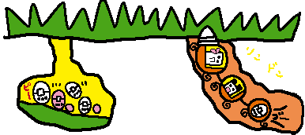

むしっちは、日当たりが良好で、
人通りが少ない、楽しそうなところの地下や草むらなんかに生息していマス。
たまごっち以上に小さいので、見つけるのはとても大変です。
でも、虫眼鏡を使ってよ〜くみて見ると、むしっちたちをいろいろな場所でみつけることができマス。
例えば、繁華街には小銭を探しにきたと思われるコガネっちがいたりするんだって！
|
|
|
そんなむしっちを初めに発見したのは、
ギュルルンゴーに乗って自慢のドリルをまわして地下をさんぽしていた、
たまごっち！！たまごっちの話によるとさんぽ中に、
アルむしっちのおうち（巣）につきあたったということです。
それが、たまごっちとむしっちの出会い。
のちにたまごっちがむしっちをUFOに招待したのをきっかけにハカセの研究は始まったのです。
|
|  |
|
ハカセの研究によると、むしっちのなかには、
おしろい花のみつを美容のためにすってみたり、
おしろいでお化粧する、コスメマニア！？のむしっちも発見されているようです。
それに、最近確認されたデータによると、むしっちはひじょうにグルメないきもので、
人間界の昆虫では考えられないような物を食べている姿が多く確認されているんだよ。
|